“GUNK is a brand dedicated to offering a no-frills, straight to the
point experience when buying face and skin care products. We aim to
help people who feel overwhelmed by the options available with blunt
marketing that explains exactly what the product is. Our policy is
product first, brand later.”
details
tools
Illustrator, Photoshop
deliverables
Gunk Logo
Brand Guide Slide Deck
timeline
Fall 2022
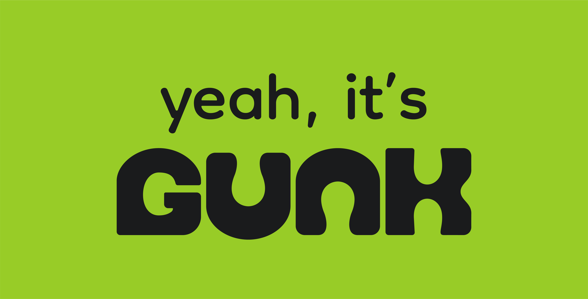
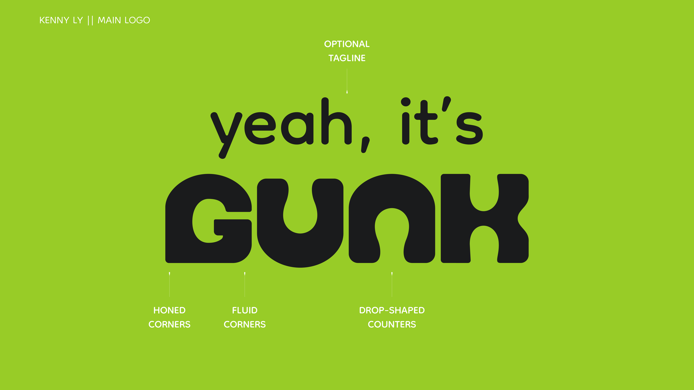
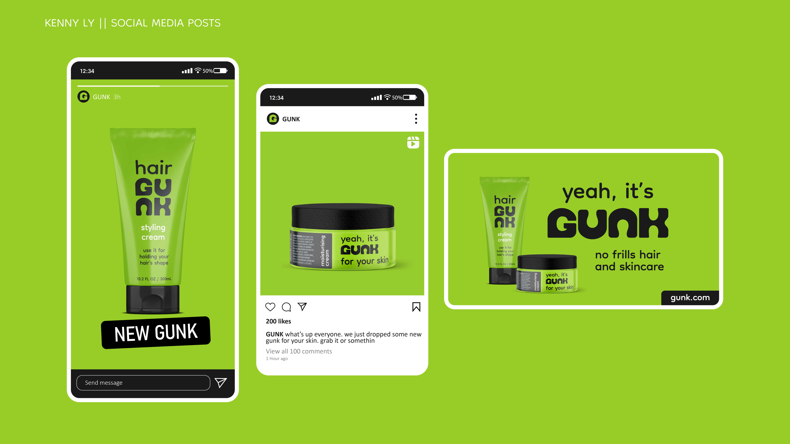
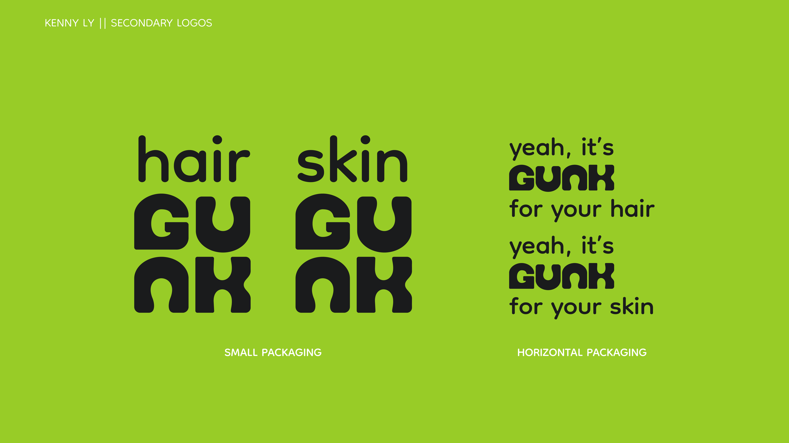
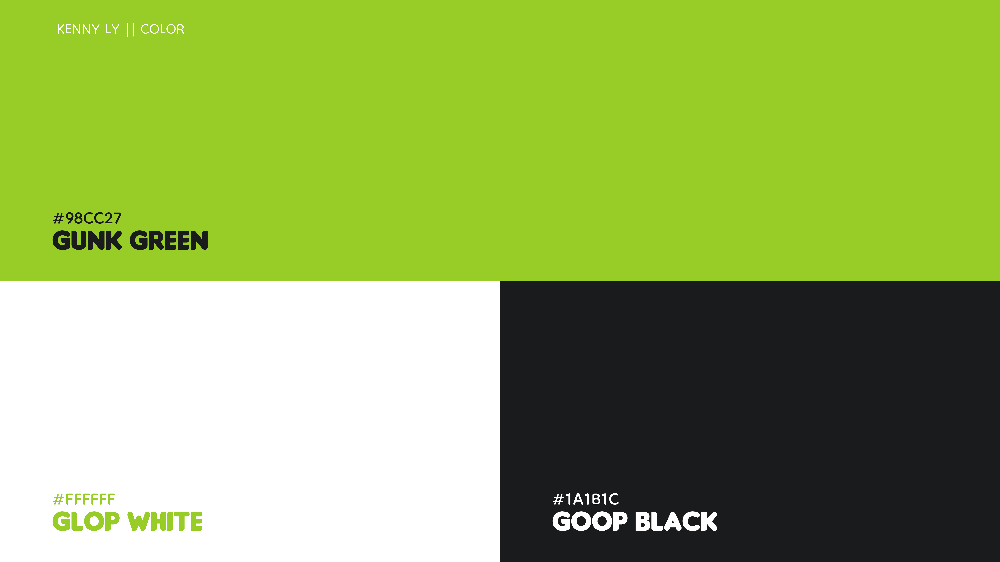
GUNKing it up
This showcase consists of a project and its continuation in another
project in the same class. The first project asked for the creation of a
health and beauty brand, requiring research into the markets we wanted
to target. The second project involved creating a brand guide, and I
chose to expand upon my brand in the first project.
In these 2 projects, I decided to create an anomaly in the space of “no
nonsense” hair and skincare brands. This led to the creation of GUNK, a
straight forward brand targeting newcomers with a tongue in cheek
attitude., standing out from its competitors with its neon green main
color.
Illuminating on GUNK
We were first tasked with going through the Illumination process to help
hone the goal of our brand, making sure to go through six steps:
- Identity - What do I know?
- Personality - What image will I project?
- Audience - Who am I talking to?
- Research - What are the unknowns?
- Requirements - What are the parameters?
- Results - What are the final expectations?
What I had found was that established no fluff brands like The Ordinary
still had too much fluff in some ways, but also too much simplicity as
it became hard to distinguish separate products from a glance. These
brands also tended to have an air of maturity and elegance around them
which I felt would alienate my audience of young newcomers to the world
of hair and skincare. Because of this, I wanted to toy with the
expectation of the audience by giving my brand a snarky attitude and
bright colors to contrast with the other brands on shelves.
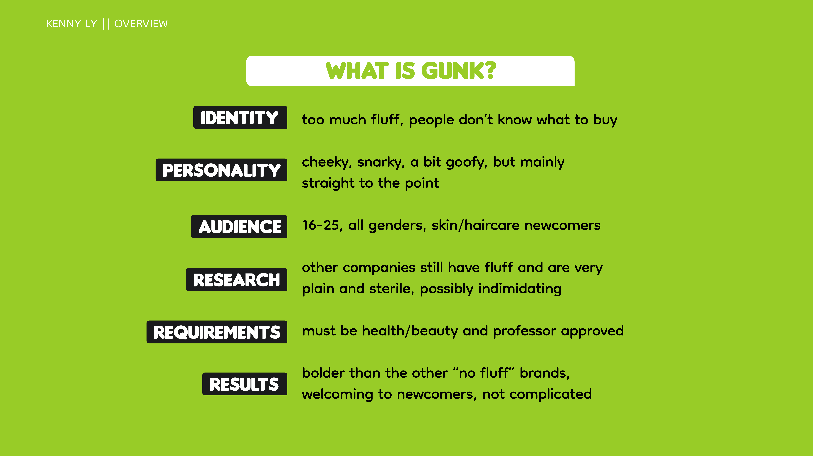
Key Design Implications
Once that was finished, I moved on to the next stage of Illumination to
help build overall themes and aesthetics for my brand. A mind map, word
list, mood board, and reversing were utilized to help establish how I
wanted to present my brand visually.
My vision for the brand was to take inspiration from the neon greens of
Hi-C Ecto Cooler to catch attention and mix it with the clear packaging
of Nickelodeon Slime containers to show that our brand has nothing to
hide.
Key Design Implications
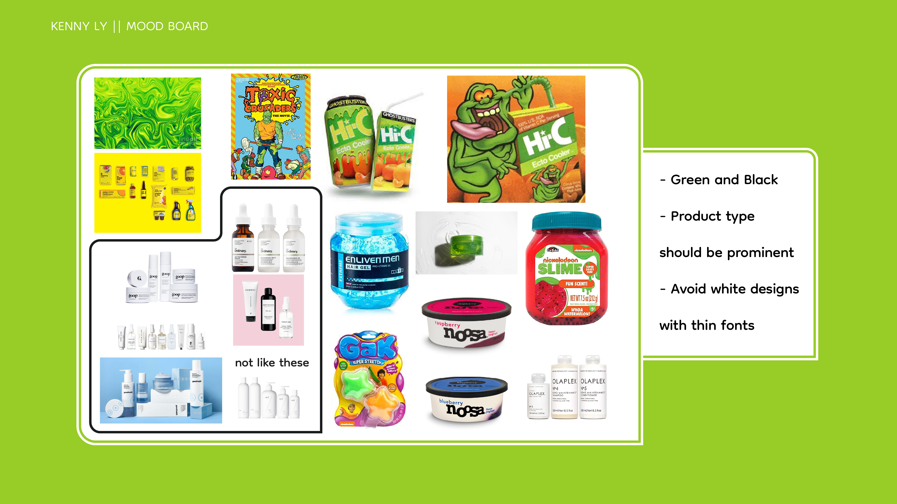
Getting my GUNK on
I then moved on to sketching out logo concepts for GUNK. At this point,
I wasn’t entirely set on a name so I focused primarily on pictorial and
mascot logos, with the idea that I would have a frog as the mascot for
GUNK.
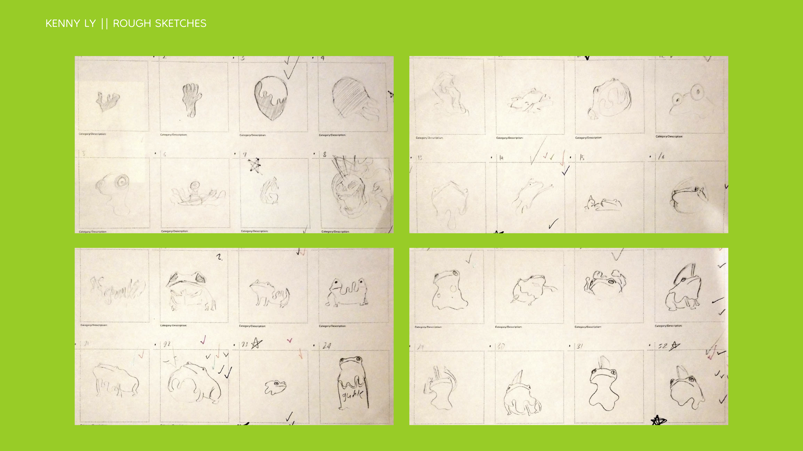
Though I had many good ideas, and I received feedback for what I had at
the time, I felt like I had strayed too far from my original vision for
GUNK. All of these logos added too much fluff to the brand so I had to
decide between abandoning my no-fluff principle or shifting my logo
designs in a different direction on the next phase of logo drafting.
In the end, I ended up changing how I approached my logo design. As I
moved on to refined sketches, I ended up focusing on making wordmarks
since I had settled on GUNK as the name for my brand.
My goal this time was to make logos that were bold but not menacing,
which involved heavy weighted characters with rounded corners to ease
some of the tension from the design. Incorporation of more simple shapes
was also considered to try and make the logo as straight to the point as
possible, along with shifting away from frogs as they distracted from
the main purpose of the brand.
The modular characters in the highlighted sketch really stuck with me
during the sketching process, which lead me to create a few more
iterations of the letterforms. The similarity between letters helped the
logo read as one large block of color, which I thought would work well
for getting customer attention when viewed on a store shelf. This and
the opportunities for other letterforms in a similar style led me to
continue developing on this sketch.
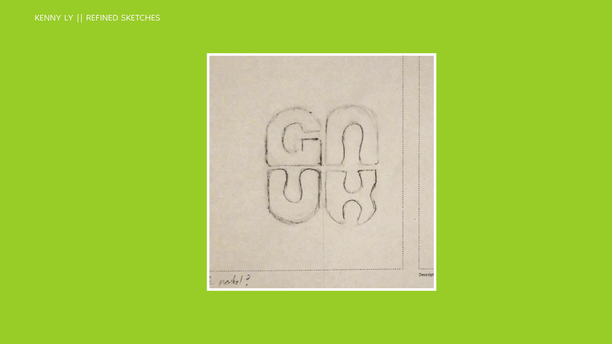
Cleaning up the GUNK
The next step in this project was to bring my sketches into Illustrator
and start vectorizing my logos. I developed multiple versions of a base
form for my letters, slowly flattening the top arch across each
generation. I wished to show a sense of fluidity in my logo since the
brand would sell oils and creams, which was done by manipulating a
teardrop shape into a counter. This shape would continue to be used on
other letters in GUNK to help keep it cohesive.
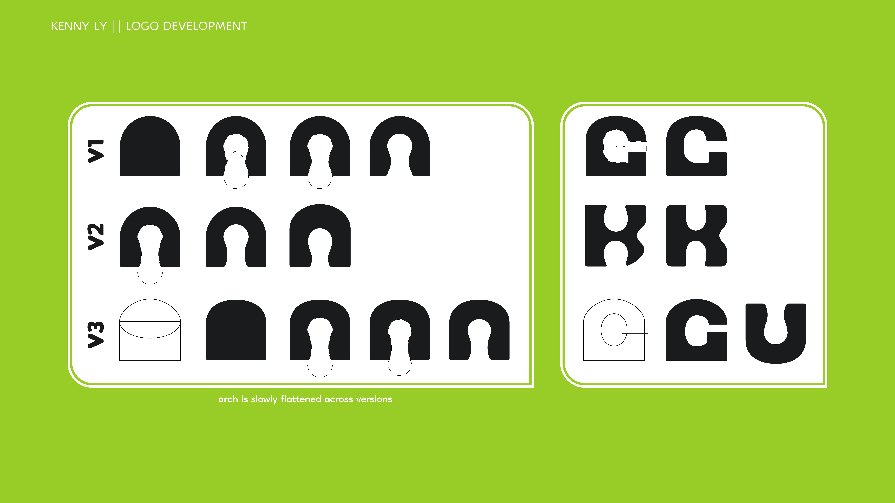
I played around with different formats of how the 4 letters would be
laid out. I tried to keep the original 2x2 grid design but making sure
it would be read in the correct order and still looked nice proved to be
challenging, so I decided to line up the characters horizontally
instead. This would make me realize that the logo could potentially be
perceived as CUNK, which lead to tweaking the G so that it reads easier.
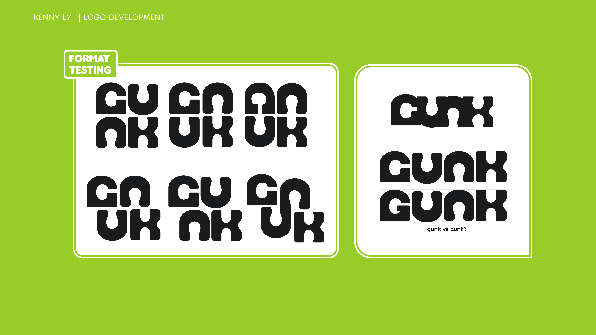
Here, I also experimented with how type would play with my logo. I
wanted something that could still stand on its own while also being able
to recede in the presence of the main logo.
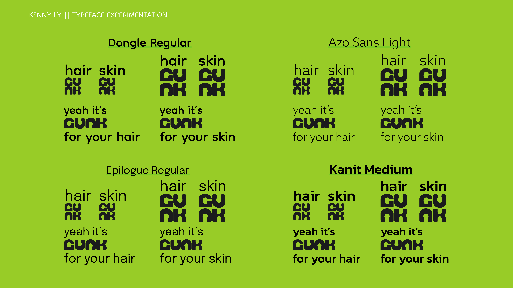
The final part of the first project was putting it all together. I stuck
with a 3 color brand system with green as the primary color, but the
off-black and white can pair with any other color if a new product line
would call for changing the green. I also kept some of the previous
iterations of the logo as alternative formats for different sized
packaging.
Branding for GUNK
I would decide to revisit GUNK for my final project to create a brand
deck in Images in Communications. My main goal was to take the
information from my original presentation and showcase it in a way that
best expressed my brand’s identity. A full green background was used to
help portray GUNK’s bold attitude.
Different display options of the logo were showcased, showing how and
when to use alternate logo formats for GUNK. GUNK’s accompanying color
palette and typefaces were also shown.
Mockups were made to show how the logo is to be used, making sure to
balance the presence of the logo and the secondary information to help
the product be read more easily.
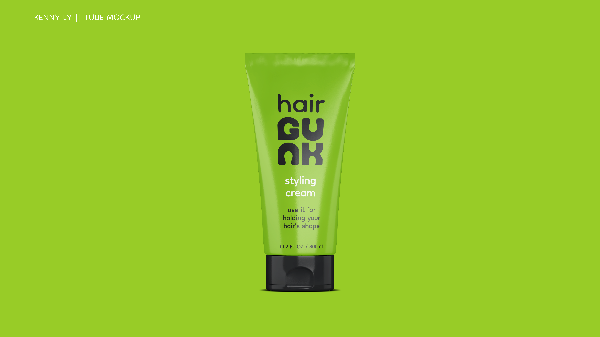
Example social media graphics were set up to show how GUNK would market
itself, focusing on solo shots of their products on flat backgrounds for
a “this is what you get” feel.
Reflecting on GUNK
Overall, I felt this project was a great success! I thought that I was
able to try designing in a direction that I don’t often do, while also
still incorporating some of my “globby frog weirdness” with the fluid
letterforms and snarky personality. There are still some slides in my
brand deck that I would like to reformat for better clarity such as the
type and pattern slides, but I feel that the deck does very well at
communicating what my brand is and my brand’s personality without
overshadowing the actual content.

 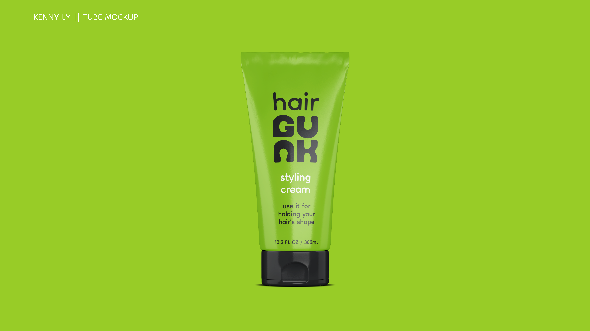
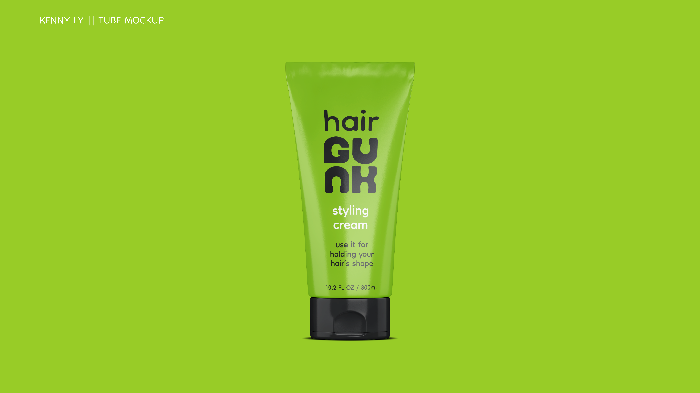